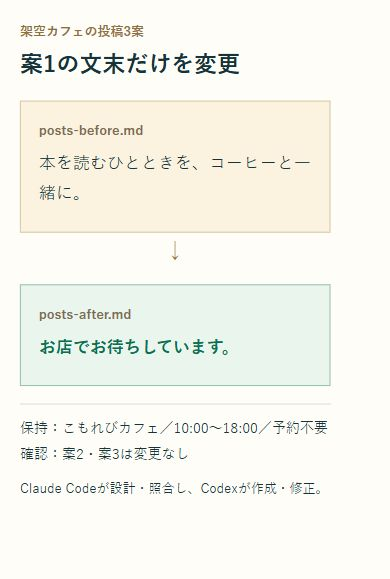

いそっち式 AIコンビ連携マニュアル

解説動画
動画を受け取り次第、掲載します。
AIを行き来して、
手が止まってませんか？
- 頼みたいけど、何を渡せばいい？
- 修正のたび、別のAIへ貼り直してる。
- できた答えを、誰に確認させる？
依頼から確認までつなぐと、自分で受け渡す往復を減らせます。今から設定して、小さな仕事を一つ任せてみます。
実作業はCodex。
僕はこれでAI社員を作って動かしてる。別々に使うより、役割を決めてつなぐのがいいんです。
まず、この流れを作る
修正後は③へ戻って確認。
Codexを追加する
PCのClaude Codeで一つずつ送信。
/plugin marketplace add openai/codex-plugin-cc/plugin install codex@openai-codex/reload-plugins準備・候補が出ないとき
Claude Code、Node.js 18.18以降、Codexを利用できるChatGPTアカウントが必要です。Claude CodeとCodex、それぞれの利用枠を使います。
候補が出なければセッションを開き直し、/pluginでCodexが有効か確認します。導入済みなら重複インストールは不要です。
使える状態を確かめる
/codex:setup未認証なら !codex login。すでに認証済みなら、そのまま次へ。
ログイン・モデル・利用量の補足
!codex loginはClaude Code内で実行します。通常のターミナルではcodex loginです。ブラウザで使いたいChatGPTアカウントを確認してサインインし、戻って/codex:setupを再確認します。認証情報をチャットへ貼る必要はありません。
Codexが未導入なら、setupの案内と公式要件を確認してから導入してください。この教材の練習ファイル自体に有料APIキーは不要です。
特定のモデル名は固定せず、現在の利用環境で選べるものを使います。分担しても使用量が必ず減るわけではありません。自動レビューを繰り返す設定は、利用枠を多く使うことがあります。
役割をフォルダへ残す
CLAUDE.md
Claude Code → 設計・確認
Codex → 作成・修正練習用の空フォルダを開き、下の指示文を送信。保存した内容も一度見ます。
役割分担の指示文を開く
この練習フォルダだけで、次の役割分担を使ってください。 ・Claude Code：依頼を整理し、完成条件を決め、結果を元情報と照合する。 ・Codex：公式プラグインの /codex:rescue で、作成と修正を担当する。 ・作成前に入力・完成条件・保存先を短く示す。 ・同じファイルを同時に編集しない。元ファイルは上書きせず、修正前後を残す。 ・確認で直す点があれば、Claude CodeからCodexへ具体的に返す。最大2往復で止め、残件を知らせる。 ・外部送信・公開・課金・設定変更・削除は、実行前に僕へ確認する。 ・使えない機能や足りない情報があれば、成功扱いにしない。 この内容を、この練習フォルダのCLAUDE.mdへ保存してください。既存の指示があれば置き換えず、差分を先に示してください。
保存したあとに見ること
練習フォルダ内のCLAUDE.mdを開き、設計・確認と作成・修正の分担があるか確認します。次のセッションでも同じフォルダを開きます。ほかのフォルダへ自動で適用される設定ではありません。
既存プロジェクトの指示を丸ごと置き換えないでください。分担は今回の選び方であり、ツールの能力の優劣を保証するものではありません。
小さな仕事を一つ任せる
こもれびカフェ（架空）
10:00〜18:00・予約不要
コーヒーを飲みながら読書ZIPを展開し、practiceのbrief.mdを練習フォルダへ。下の指示文を送ります。
実演の指示文を開く
この練習フォルダ内だけで実行してください。ネット検索・公開・送信は不要です。 入力はbrief.mdだけです。Claude Codeが完成条件を整理し、公式プラグインの /codex:rescue --fresh でCodexにInstagramの投稿文を3案作らせてください。各案60〜90字を目安に、店名・営業時間・特徴を含め、原文にない価格・駅距離・限定企画・売上は加えません。posts-before.mdへ保存してください。 Claude Codeが元情報と照合したあと、/codex:rescue --resume で同じ作業文脈へ「案1の最後の一文だけを『お店でお待ちしています。』に変更」と返し、posts-after.mdへ保存させてください。元ファイルは残します。 最後にClaude Codeが、事実と差分を確認してcheck.mdへ記録してください。実行できなければ、その箇所で止め、理由を知らせてください。

投稿3案と実演の確認を読む
Codexが保存した修正前
案1 コーヒーを飲みながら読書できる、こもれびカフェ。営業時間は10:00〜18:00、予約は不要です。本を読むひとときを、コーヒーと一緒に。 案2 読書のおともにコーヒーを。こもれびカフェは、コーヒーを飲みながら読書できるカフェです。10:00〜18:00の営業で、予約は不要です。 案3 本を読みながら、コーヒーを飲む時間を。コーヒーを飲みながら読書できるこもれびカフェは、10:00〜18:00に営業しています。予約は不要です。
Codexが保存した修正後
案1 コーヒーを飲みながら読書できる、こもれびカフェ。営業時間は10:00〜18:00、予約は不要です。お店でお待ちしています。 案2 読書のおともにコーヒーを。こもれびカフェは、コーヒーを飲みながら読書できるカフェです。10:00〜18:00の営業で、予約は不要です。 案3 本を読みながら、コーヒーを飲む時間を。コーヒーを飲みながら読書できるこもれびカフェは、10:00〜18:00に営業しています。予約は不要です。
Claude Codeが店名・営業時間・特徴・予約不要を元情報と照合。案2・3はそのままで、案1の最後の一文だけを変更しました。
展開後は「ガイド.html」を開きます。
確認できたら、次の一件へ
- 投稿3案がファイルになった。
- 元情報を保ち、一文だけ変わった。
- 修正前・修正後・確認記録が残った。
まずはbrief.mdを自分の小さな仕事に書き換える。最初から全部任せるより、一件通すと分担が見えてきます。
任せる仕事の次は、
SNSで届ける流れへ
投稿を任せた次は、誰に何を届けるか。SNS収益化の流れを、僕の7日間の音声で学べます。
 100円の音声教材を見る →
100円の音声教材を見る →